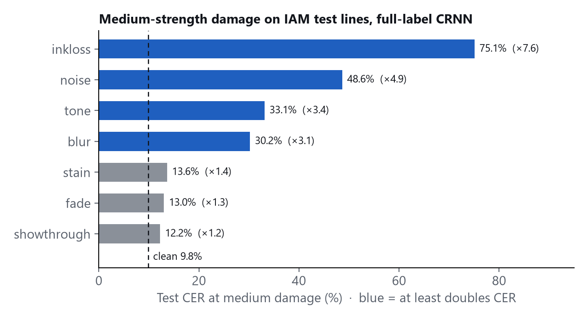
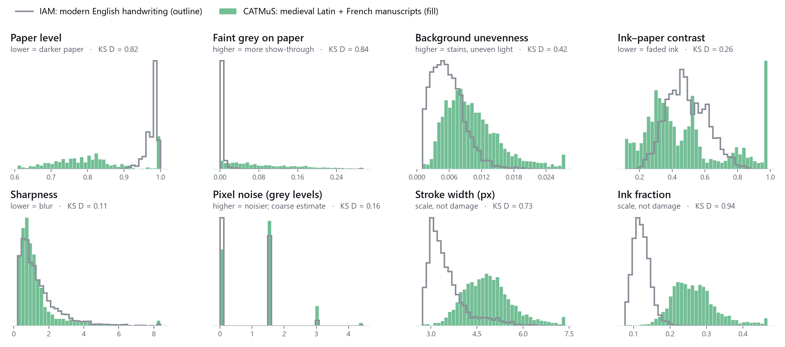
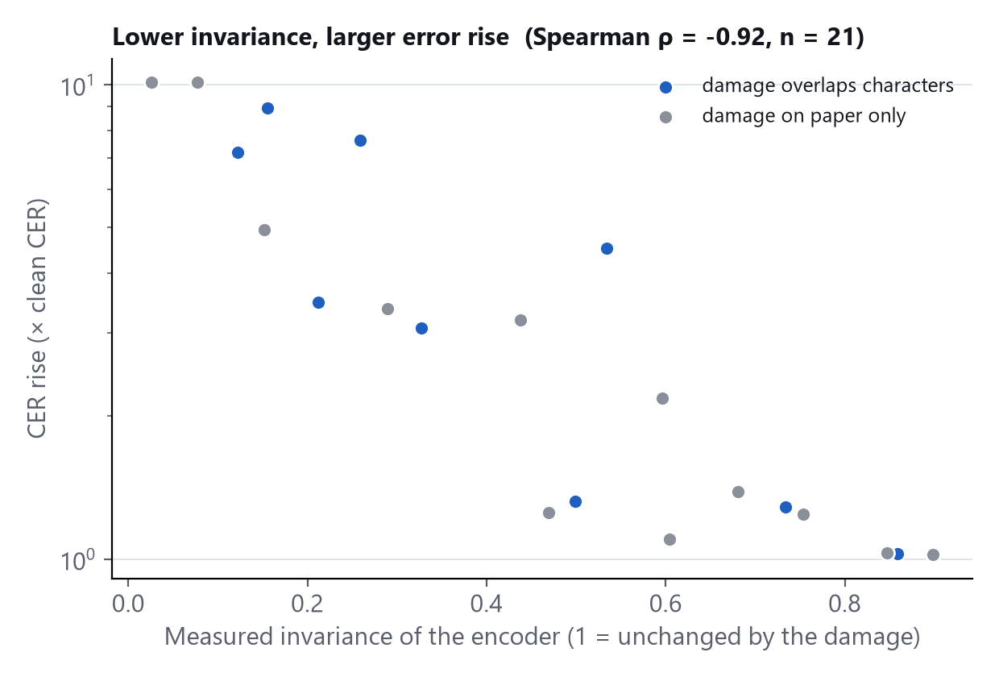

Team 147 briefing · written 10 Nov 2026 · Review 2 with the guide on Fri 13 Nov, end-semester assessment on Tue 17 Nov
Text recognisers read clean scans well and fail on damaged documents: darkened paper, ink showing through from the back, stains, fading, blur. Damaged collections are also where transcribed training data is scarcest.
Self-supervised learning (SSL) gets around the label shortage. The model first trains on unlabelled lines: we corrupt a line, and the model has to rebuild the clean version. Whatever we corrupt, the model learns to see through. So the list of corruptions decides what the model learns to ignore. Today every paper picks that list by hand.
Our idea: measure the damage on real historical lines, set the corruptions from those measurements ("derived" instead of "hand-picked"), and then test whether what the model ignores predicts where it fails.
| Term | Meaning |
|---|---|
| CER | Character error rate: the share of characters the model gets wrong. Lower is better. |
| CRNN | Our recogniser: a CNN that reads the image, a BiLSTM that reads the sequence, and a CTC output. 7.4M parameters. |
| Masked autoencoder | The pretraining method: hide or corrupt parts of a line and train the encoder to rebuild the clean line. |
| Invariance | How little the encoder's features change when a line is damaged. 1 means the damage is fully ignored. |
| IAM / CATMuS | IAM: clean modern English handwriting. CATMuS: real medieval Latin and French manuscript lines. |
| Panel remark (15 Oct) | What we now show |
|---|---|
| Show that good accuracy can be achieved | Our small CRNN, trained for 50 minutes on a laptop GPU, reaches 9.8% CER on IAM. PaddleOCR, an industrial system, gets 11.4% on the same lines. |
| Make the base foundations strong | One fixed protocol for every run (line height, character set, official splits), two seeds, every number produced by a script, and pass/fail rules written down before the runs. The checks caught two bugs that would have spoiled the results. |
Before running anything we fixed four assumptions, A1 to A4, each with a pass/fail rule. Two passed and two failed.
| Test CER | IAM | CATMuS |
|---|---|---|
| PaddleOCR PP-OCRv6, used as it comes | 11.4% | 52.5% |
| Our CRNN, all labels | 9.8% | 20.0% |
| Our CRNN, 10% of IAM labels (648 lines) | 19.6% | – |
| Our CRNN, 5% of CATMuS labels (1,188 lines) | – | 33.6% |
| Our CRNN, 1% of IAM labels (65 lines) | 43.3% | – |
Few-label rows are the mean of two seeds, which differ by at most 0.5 points.

At medium strength, ink loss multiplies the error by 7.6, noise by 5.0, paper tone by 3.4 and blur by 3.1. Show-through, fading and stains raise it by at most 1.4 times.
On real CATMuS lines, the most faded quarter of lines has 1.35 to 1.47 times the error of the least faded quarter. Paper darkness, noise and unevenness show no clear effect there.

Our rule needed three damage statistics to separate clearly. Only two do: the paper is much darker, and far more of it is faintly grey (show-through). Contrast, sharpness and noise look much like clean handwriting. So real medieval damage sits mostly in the paper, not in the blur and noise that hand-picked recipes stress.
| Test CER, mean of 2 seeds | No pretraining | Masking only | + hand-picked | + derived (ours) |
|---|---|---|---|---|
| CATMuS, 5% labels | 33.6% | 33.3% | 35.0% | 33.4% |
| IAM, 10% labels | 19.6% | 20.4% | 21.0% | 20.5% |
| IAM, 1% labels | 43.3% | 43.8% | 44.7% | 43.9% |
No pretrained model beats plain training by more than the gap between seeds. Derived damage is better than hand-picked in all three rows, but it only matches masking alone. The fair reading is: hand-picked damage hurts, derived damage does no harm. It is not yet "derived damage helps".

The less the encoder ignores a damage, the more that damage raises the error. Spearman correlation is −0.92 for the model in the figure, and between −0.78 and −0.95 for all nine models.
Two checks, run on 10 Nov, rule out the easy explanations:
The same eight IAM models (10% labels), tested on damaged copies of the test set. Values are CER for seed 0 / seed 1.
| CER under damage | No pretraining | Masking only | + hand-picked | + derived (ours) |
|---|---|---|---|---|
| Paper tone, medium | 39.9 / 39.4 | 32.5 / 59.2 | 38.9 / 41.2 | 32.1 / 26.4 |
| Blur, high | 79.2 / 79.6 | 73.2 / 82.7 | 64.1 / 63.6 | 80.1 / 79.2 |
| Show-through, high | 30.9 / 31.6 | 34.8 / 34.4 | 41.8 / 36.4 | 29.9 / 32.7 |
| Ink loss, medium (never pretrained on) | 75.3 / 74.9 | 75.1 / 76.9 | 74.0 / 75.1 | 78.3 / 74.1 |
The hand-picked recipe blurs half of its lines, and its models are the most robust to blur. The derived recipe darkens the paper on 84% of its lines, and its models are the most robust to paper tone. Nothing helps on ink loss, which no recipe contained. This is two seeds, synthetic damage and one dataset, so it is a first sign and not a result we can claim.
Why the missing gain is not the end of the idea. Published gains from this kind of pretraining come from millions of unlabelled lines and much larger models. We used 30,000 lines for 34 minutes. One of the papers we cite (Kišš and Hradiš, ICDAR 2024) also reports that pretraining on the target collection does not always beat plain supervised training. So the pilot tested our small setup, and the idea at proper scale is still open.
Phase 2 plan. Pretrain longer on far more lines, or start from a published pretrained encoder; freeze the pretrained part for the first fine-tuning steps; use three or more seeds; test with about 30 labelled lines, where pretraining should matter most; tag real test lines by damage type.
If pretraining still gives nothing by the middle of Phase 2, the project turns into a study of which damage really hurts recognisers and how well measured invariance predicts it. The measurement tool, the damage models and the RQ3 result carry over unchanged, and that study can be published without a pretraining gain.
Your method did not improve accuracy. What have you shown?
That the pipeline works end to end, that damage hurts and by how much, and that invariance predicts the error rise. The accuracy comparison was run at a very small scale and is the first task of Phase 2.
What is new compared with existing work?
Every text-recognition paper we found picks its corruptions by hand, including the strongest recent one (NeurIPS 2026). We set them from measurements of real lines, and we measure invariance for each damage type.
Why did two of your four assumptions fail?
The rules were fixed before the runs, so we report them as they came out. A2 missed by one statistic (two separated clearly, three were needed). A3 failed because pretraining at this scale gave no gain.
Why not use a large vision-language model?
They are outside our scope and compute. A small model keeps the comparison clean: only the pretraining changes between runs.
Why a CRNN and not a transformer?
We tried a small ViT first. With so few labelled lines it memorised them (60–75% CER against 20–43% for the CRNN). A transformer encoder stays an option for Phase 2 with more data.
| What | Where (inside the research folder) |
|---|---|
| Review-2 slides (Fri 13 Nov), 24 slides | capstone/reviews/review2/submission/ |
| End-semester slides (Tue 17 Nov), 28 slides | capstone/reviews/review3/submission/ |
| Phase-1 report draft (Word) | capstone/report/Team147_Phase1_Report_DRAFT.docx |
| Weekly reports, weeks 1–15 | capstone/weekly_reports/ |
| All results and figures | results/ (summary: results/pilot_summary.md) |
| Code | lwti/ |